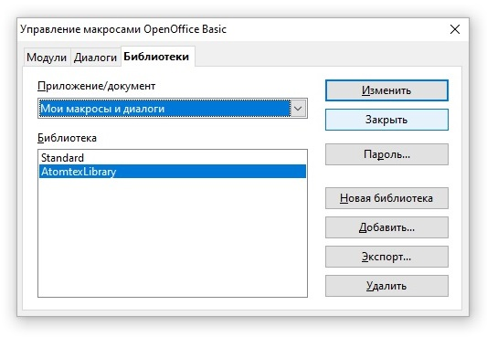
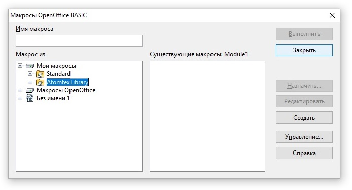

Как установить макрос для протоколов и сертификатов

ВНИМАНИЕ! Макрос пока ещё находится на стадии тестирования!
- Если нужно просто обновить макрос, нужно просто перезаписать папку "AtomtexLibrary" в папке "Общие документы"
- Макрос написан для OpenOffice, поэтому работать в MicrosoftOffice или в LibreOffice НЕ БУДЕТ
Если в процессе установки будет выскакивать такое окно, не обращаем внимания, жмем "ОК" (придется нажать
несколько раз подряд)

- Распаковать архив с макросом в папку C:\Users\Имя пользователя\AppData\Roaming\OpenOffice\4\user\basic
- Запустить OpenOffice Writer и в открывшемся документе нажать Alt+F11. В появившемся окне нажать "Управление"

- Выбрать вкладку "Библиотеки" и нажать "Добавить"

- Открыть папку, в которую распаковывали архив, и в папке "AtomtexLibrary" выбрать файл "script.xlb". Нажать "Открыть"
- Нажать "OK"

- Нажать "Закрыть" 
- Следующее окно не закрываем, раз уж мы здесь, сделаем ярлык для запуска макроса. Для этого выбираем нашу библиотеку ("AtomtexLibrary") и раскрываем её (нажимаем маленький плюсик): 
- Выбираем модуль "ModuleMain", а в нем — функцию "MainDialog_Show" (эта функция запускает главное окно
макроса) и нажимаем "Назначить"

- Под ярлык макроса сделаем отдельную панель, так будет удобнее. Нажимаем "Создать"

- Как-нибудь называем (например "Атомтех") и жмем "ОК"

- Жмеем "Добавить"

- Опять выбираем модуль "ModuleMain" и функцию "MainDialog_Show". Жмем "Добавить"

- Нажать "Изменить", "Добавить значек"

- Выбираем значек (если нужен значек АТОМТЕХ, жмем добавить и идем в папку с библиотекой, там где-то есть),
жмем "ОК"

- Готово! Макрос установлен и работает